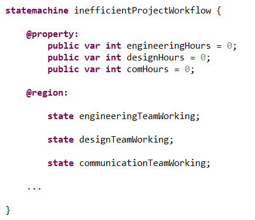
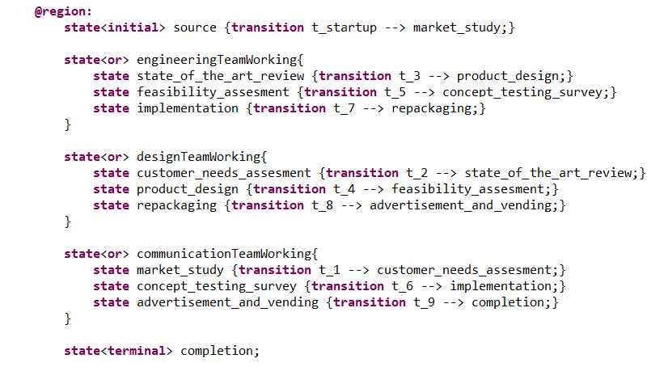
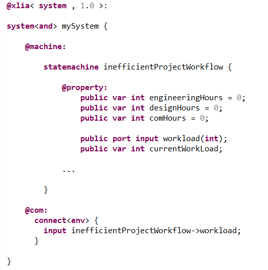
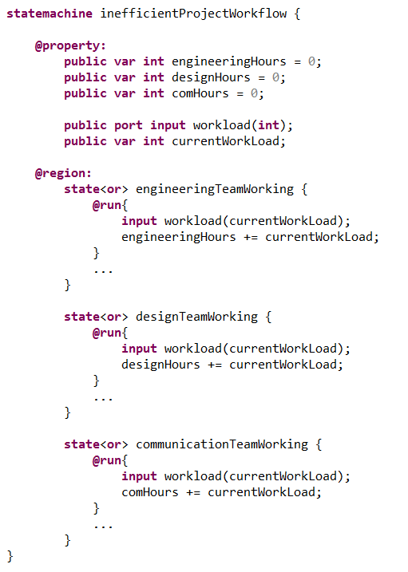
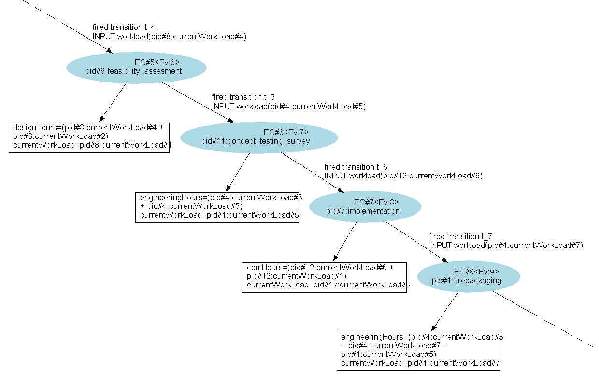
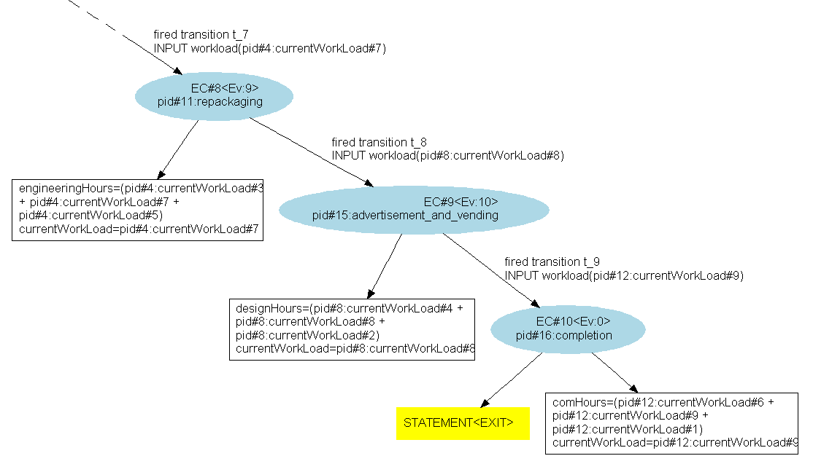
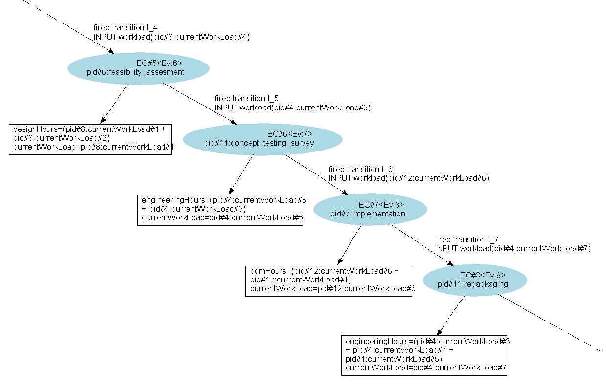
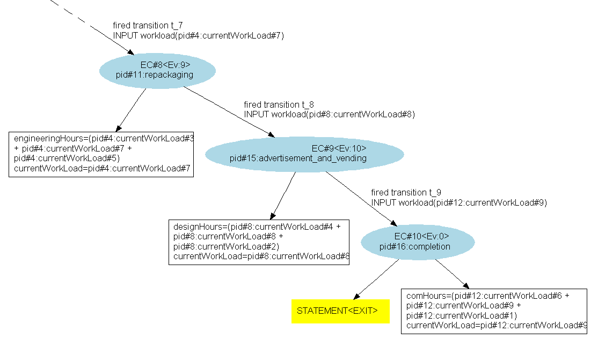

In this example, we'll use XLIA to model a project workflow (used for the creation of a product to be sold to customers on a market).
This example is used to illustrate the use of composite states and the "@run{...}" activity primitive of states in XLIA. The model itself is not important (on top of being very inefficient).
Three teams are working together :
Their goal is to create a shippable product. To do so, they follow a strict waterfall design process which is the following :
The project manager needs to keep track of the workloads of each team in order to balance resource allocations.
In order to keep track of the workloads, we'll use variables as counters :

Because of the waterfall process, the teams cannot work at the same time on the same project. We'll use this at our advantage by using states to model which team is working :
We'll then add the subjects on which each team can be working as sub-states, the XTeamWorking state then being an "or" composite state. We'll also add an initial and a terminal state, as well as the transitions between all those states :
To simulate the workload for each task, we'll use input from the environment. We'll create an input port 'worload' and a variable 'currentWorkload' to store the values. We'll also connect the port to the environment :
Finally, to incorporate this simulated workload into the counters of each team, we'll implement the "@run{...}" activity primitive for the 3 composite states corresponding to the 3 teams :
The execution graph is the following :
 



We can observe that the model behaves as we excepted; each task is performed in the order of the waterfall process, and the workloads are correctly updated according to the team that has been working.